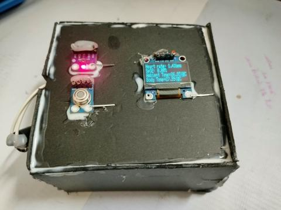

Research, computational analysis, biomaterials, and biomedical
engineering projects. Explore the summaries below or open individual
project details for methods, contributions, and available code.
Undergraduate thesis · Featured researchGSE229685 + GSE168775
Host-directed target discovery in measles virus infection
Integrated bulk and single-cell RNA-seq analyses to investigate
persistent host-response signatures, distinguish infected-cell
from bystander-cell responses, and prioritize candidates for
further investigation.
Research status: Revised candidate-discovery
analysis is in progress. Downstream network analysis and molecular
docking remain planned or in progress; no validated therapeutic
target is claimed.
UNDERGRADUATE RESEARCH · MANUSCRIPT IN PREPARATION
Hydrogel-based wound-dressing research
Development and optimization of physically cross-linked
chitosan/PVA/gelatin composite hydrogels for antibiotic-loaded
wound dressings.
My role, methods & evaluation
Primarily prepared the hydrogels and worked on formulation
development using planned polymer blend ratios.
Applied physical freeze–thaw crosslinking and freeze-drying
as part of the preparation workflow.
Participated in selected characterization tests. The project
considered swelling, water retention, gel fraction, porosity,
degradation, tensile properties, and additional evaluations
where data were available.
Manuscript is in preparation. No performance outcomes are
claimed here without verified results.
Compared electrode materials and diameters using COMSOL Multiphysics.
Modeling focus
Built a 3D electrode model and compared electric potential and
current-density behavior across design options. Interpretation
should follow the project report.
Feedback-control concept using EEG-derived BIS, target depth,
and control updates under simulated conditions.
Project summary
Explored signal responses and feedback-control behavior under
simulated conditions. This is a modeling project, not a
clinically validated anesthesia controller.

IOT · HEALTH MONITORING
IoT-based patient health monitoring
Portable vital-sign monitoring prototype with Arduino Nano,
Bluetooth, and mobile visualization.
System overview
Combined vital-sign sensors, Arduino Nano, HC-05 Bluetooth,
and mobile visualization via Ardutooth.
Project descriptions distinguish preliminary findings from verified
outcomes. Where a repository or report is available, use the linked
material for further technical details.